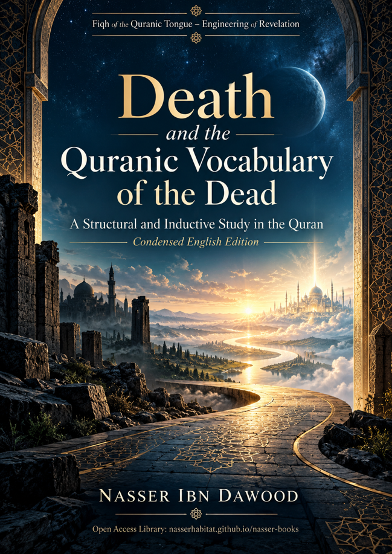

Nasser Ibn Dawood

Text extracted from the author-supplied Word edition; consult the original source.
Preparing the reader…
DEATH AND THE QUR’ANIC VOCABULARY OF THE DEAD
Mawt, Maytah, Amwāt, and Mawtā in an Inductive-Structural Reading
Condensed Conceptual English Edition
Fiqh of the Qur’anic Tongue – Engineering of Revelation
Nasser Ibn Dawood
2026
nasserhabitat.github.io/nasser-books/
I. The Global Knowledge Manifesto
Knowledge is a universal right. The author firmly believes that wisdom should not be locked behind paywalls or language barriers.
Global Access Policy: All books in this library are available for free in multiple digital formats (PDF, HTML, DOCX, TXT).
The Digital Library: As of early 2026, the collection hosts 68 volumes (34 in Arabic and 34 in English), fully optimized for AI-assisted research and digital archiving.
Official Platforms: Main Website: nasserhabitat.github.io/nasser-books/
GitHub: nasserhabitat/nasser-books
II. Translator’s Note: The Bridge of Meaning
This English edition is a condensed conceptual adaptation. It is not a word-for-word translation, but rather an "extraction of essence." It presents the core philosophical framework in accessible English, omitting the exhaustive linguistic debates and classical references found in the original Arabic text.
For the academic researcher: The original Arabic version remains the primary source for comprehensive linguistic analysis, detailed exegesis (Tafsir), and the complete bibliography.
Editorial note for this condensed edition: Arabic technical terms are retained where their distinctions matter. The English reader is therefore introduced to terms such as mawt (death), tawaffī, baʿth (raising/resurrection), iḥyāʾ (giving life/revival), amwāt, mawtā, mayyit, mayt, and maytah instead of flattening them into a single English vocabulary.
Executive Summary
This book studies the Qur’anic field of death from within the Qur’an’s own network of usage. It does not begin with a dictionary definition and then force every verse to fit it. Instead, it builds a closed corpus of the root m-w-t, distinguishes its internal forms, compares their contexts, and then tests every proposed definition against resistant passages.
The audited corpus contains 165 occurrences of the root m-w-t, distributed across 143 distinct verses in 53 surahs. The occurrences were organized into eight principal morphological categories. The central methodological result is deliberately negative in form but positive in scientific value: no single positive lexical definition survived all the resistant cases. The study therefore seals ROOT LAW (m-w-t) = 0 — meaning not that the root has no meaning, but that no one formula should be imposed on all of its Qur’anic uses.
What does survive are strong distinctions, boundary laws, and a practical analytical model. Death is not identical to non-existence, killing, tawaffī, or the mere negation of life. The forms māta and amāta do not perform the same function. Amwāt and mawtā show different distributional patterns. The Qur’an can speak of someone who "was dead" and was then given life and light while still being physically alive, and it can call people to what "gives you life." It can also describe a state in which one "neither dies nor lives," which prevents death and life from being treated as a simple exhaustive binary in every context.
The book therefore shifts the reader from the question "What is death?" to a more disciplined question: "How does the Qur’anic field of death work across event, classification, description, and relational network?" The result is DSAM — the Death-Specific Analytical Matrix — a four-layer model that helps readers examine a verse without confusing the function of one form with another.
Core principle: a failed universal definition is not a failed study. Sometimes the most rigorous result is to refuse a generalization that the corpus does not support.
How to Read This Condensed Edition
The original Arabic volume is both a research study and a training manual in Qur’anic inquiry. This condensed edition preserves that dual purpose. Each section therefore gives both a finding and the reasoning discipline behind it. The reader is encouraged to follow a recurring sequence:
READ → COLLECT → CONTEXTUALIZE → COMPARE → FORM A HYPOTHESIS → TEST RESISTANCE → JUDGE → CONTINUE THE RESEARCH
Several methodological cautions govern the entire work: co-occurrence is not causality; textual sequence is not necessarily chronological sequence; morphology does not automatically become semantics; a branch of a root is not the root itself; a model is not a lexical law; and a previous volume is not evidence for a new corpus.
Condensed Contents
1. From Definition to Structure
2. The Corpus of m-w-t and Its Internal Forms
3. Death, Life, and Revival: Why the Binary Is Not Simple
4. Death, Tawaffī, Killing, and Baʿth: Separation of Functions
5. After Death: Term, Return, Barzakh, and Exceptional Revivals
6. Functional Death and the Limits of Metaphor
7. Dunyā, Ākhirah, and al-Ḥayawān
8. DSAM: A Practical Analytical Matrix
9. What the Study Establishes — and What It Refuses to Establish
10. Open Research Questions and the Reader’s Role
Glossary of Key Terms and Status Labels
1. From Definition to Structure